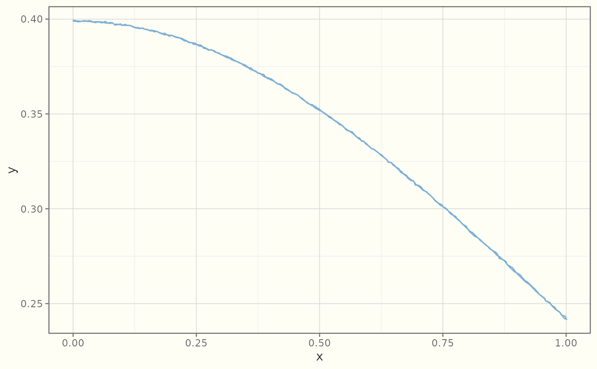

Draws the curve of a function y = fun(x) with a hand-drawn stroke — the
sketch analogue of ggplot2::geom_function(), built on
ggplot2::stat_function().
Usage
geom_sketch_function(
mapping = NULL,
data = NULL,
stat = "function",
position = "identity",
...,
fun = NULL,
xlim = NULL,
n = 101,
args = list(),
roughness = 1,
bowing = 1,
n_passes = 2L,
seed = NULL,
na.rm = FALSE,
show.legend = NA,
inherit.aes = FALSE
)Arguments
- mapping
Set of aesthetic mappings created by
ggplot2::aes().- data
Data to display.
- stat
Statistical transformation (default
"identity").- position
Position adjustment (default
"identity").- ...
Other arguments passed on to the layer.
- fun
Function to evaluate, or its name as a string.
- xlim
Optional numeric range over which to evaluate
fun; defaults to the panel x range.- n
Number of points to sample along the curve. Default 101.
- args
List of extra arguments passed to
fun.- roughness
Non-negative roughness parameter (0 = straight). Default 1.
- bowing
Non-negative bowing multiplier. Default 1.
- n_passes
Number of stroke passes for the double-stroke effect. Default 2.
- seed
Integer seed for reproducibility.
NULLusesgetOption("ggsketch.seed", 1L).- na.rm
If
FALSE(default), missing values are removed with a warning.- show.legend
Logical. Should this layer be included in the legend?
- inherit.aes
If
FALSE, override the default aesthetics.
See also
Other sketch-geoms:
GeomSketchAbline,
GeomSketchBoxplot,
GeomSketchBracket,
GeomSketchCol,
GeomSketchCurve,
GeomSketchEllipse,
GeomSketchHex,
GeomSketchLine,
GeomSketchLinerange,
GeomSketchPath,
GeomSketchPoint,
GeomSketchPolygon,
GeomSketchRect,
GeomSketchRibbon,
GeomSketchRug,
GeomSketchSegment,
GeomSketchSmooth,
GeomSketchSpoke,
GeomSketchViolin,
annotate_sketch(),
geom_sketch_bin2d(),
geom_sketch_contour(),
geom_sketch_count(),
geom_sketch_density(),
geom_sketch_density2d(),
geom_sketch_histogram(),
geom_sketch_jitter(),
geom_sketch_qq(),
geom_sketch_quantile(),
geom_sketch_text()
Examples
library(ggplot2)
ggplot(data.frame(x = c(-3, 3)), aes(x)) +
geom_sketch_function(fun = dnorm, colour = "#7BAFD4", seed = 1L) +
theme_sketch()
